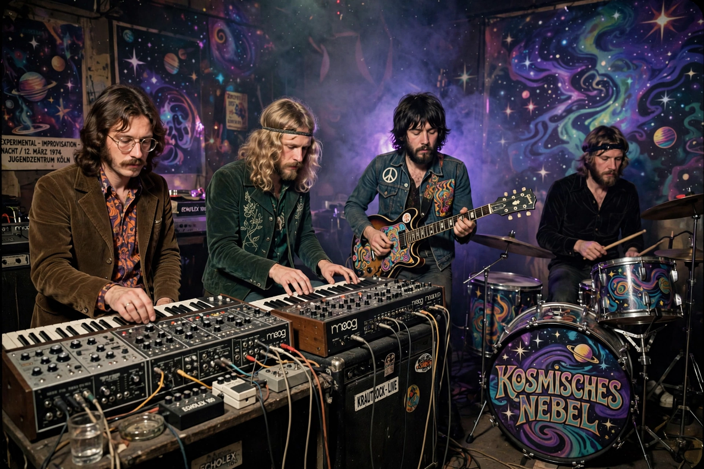

| Krautrock | |
|---|---|
 | |
| Stylistic origins | Experimental rock, electronic, psychedelic rock, avant-garde, musique concrète |
| Cultural origins | Late 1960s, West Germany |
| Key acts | Can, Kraftwerk, Neu!, Faust, Tangerine Dream, Amon Düül II, Cluster |
Krautrock (also called kosmische Musik, German for "cosmic music") is a broad genre of experimental rock that developed in West Germany in the late 1960s and early 1970s. Rejecting both Anglo-American blues-rock conventions and Germany's own schlager tradition, krautrock artists drew on avant-garde composition, electronic music, jazz improvisation and psychedelia.
The scene grew out of the 1968 student movement and the desire of a post-war generation to create a distinctly German music. Can, formed in Cologne by former Stockhausen students Irmin Schmidt and Holger Czukay, built hypnotic grooves around repetition and tape editing. In Düsseldorf, Neu! (Klaus Dinger and Michael Rother, formerly of Kraftwerk) perfected the relentless 4/4 "motorik" beat, while Kraftwerk — founded by Ralf Hütter and Florian Schneider — moved from flutes and guitars to pure electronics.
Other major acts included the anarchic Faust, Berlin's Tangerine Dream and Cluster, the cosmic Ash Ra Tempel, and Munich commune band Amon Düül II. Producer Conny Plank's studio was a creative hub for much of the movement.
Krautrock profoundly influenced synth-pop, post-punk, techno, ambient and post-rock; artists from David Bowie (whose Berlin Trilogy drew directly on the scene) to Stereolab and Radiohead cite its influence. The term "krautrock" itself was coined, half-mockingly, by the British music press.
Kraftwerk · Ralf Hütter · Synth-pop · Ambient music
From Wikipedia, the free encyclopedia (recreated from memory).